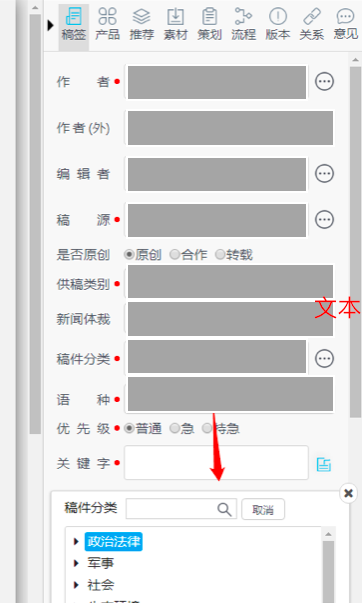
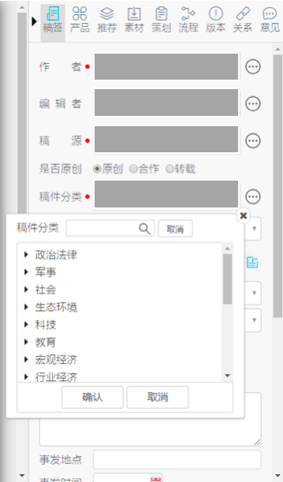

原图片：

修改后图片：

下面说说修改的内容和方法：
- 原图片中显示：点击稿件分类，弹窗的位置是在这个tab下方近150px。事实上，不管点击 作者、编辑者、稿源还是稿件分类这几个tab最右边的icon时，弹窗都是在这个tab下方近似于150px左右的位置。那么？这个150px是怎么计算得到的呢？为什么只与当前tab位置有关？于是，关于这部分我看了下项目的源码，对此进行了简单的计算，并尝试修改算法。
源码中的计算：
- top = targetOffset.top + windowScrollTop + targetOuterHeight;
修改后的计算：
- top = targetOffset.top + windowScrollTop - targetOuterHeight*6;
// target: 点击的当前元素(即：上图中带有三个点的icon)
let targetOffset = target.getBoundingClientRect();
let windowScrollTop = window.pageYOffset || document.documentElement.scrollTop;
let targetOuterHeight = target.offsetHeight;
好的，接下来我们分析一下，这三个属性分别是什么，为什么要用这三个属性？
- targetOffset.top： 当前DOM元素到浏览器可视区的距离（不包含文档卷起的部分)
- windowScrollTop: 滚动条顶部到网页顶部的距离
- target.offsetHeight： 元素CSS高度的衡量标准，包括元素的边框、内边距和元素的水平滚动条。
实际上，这里的 targetOffset.top + windowScrollTop 是一个相对高度，受滚动条位置影响，而 targetOuterHeight 是 target 元素的CSS高度。因此，点击icon时，dialog实际上位于 targetOffset.top + windowScrollTop + targetOuterHeight 这样的距离下方。
PM提出的需求是，要求：dialog对话框紧跟在icon下方。于是，我开始研究这部分距离。实际上经过多次测试，这段距离确实是固定值，并不受 target 位置影响，恰好约等于(整个文档高度 - 滚动条竖值长度)，那么这段距离目的何在？既然是相对位置，那dialog弹出的位置应该会受滚动条位置影响呢？
既然要求弹窗需要受滚动条位置的影响，那么 windowScrollTop 的距离是一定要有的，但是 targetOffset.top 也必须考虑，因为不同的icon受其父元素影响，CSS样式决定了其实际height，因此这两个数据不改动，不修改其计算方式，以免影响其他元素位置。
于是，我想到了别的方法去修改这段距离的计算。于是，我的思路改成，用什么样的计算值，代替这部分空白的距离，将其直接减掉，不是更好吗？ 于是，计算了target，container 等多个dom元素的offset 相对高度，发现 targetOuterHeight (即 target.offsetHeight)是一个固定值24px， 就是icon的实际CSS高度。那么我通过计算和估算，大概确定了 这部分空白值 约等于 6个icon的高度。 因此，修改后的代码逻辑变成： targetOffset.top + windowScrollTop - targetOuterHeight*6; 这样 element.style.top = top + ‘px’，即 dialog位置的实际top受滚动条的位置而变动，但不受整个文档的大小而偏移，效果如图2所示。
PS: 水平偏移位置此处未做修改，主要还是需要搞清楚 视口宽高、位置与滚动高度。即：window.innerHeight、 target.offsetHeight、getBoundingClientRect() 这几个属性的计算方式。